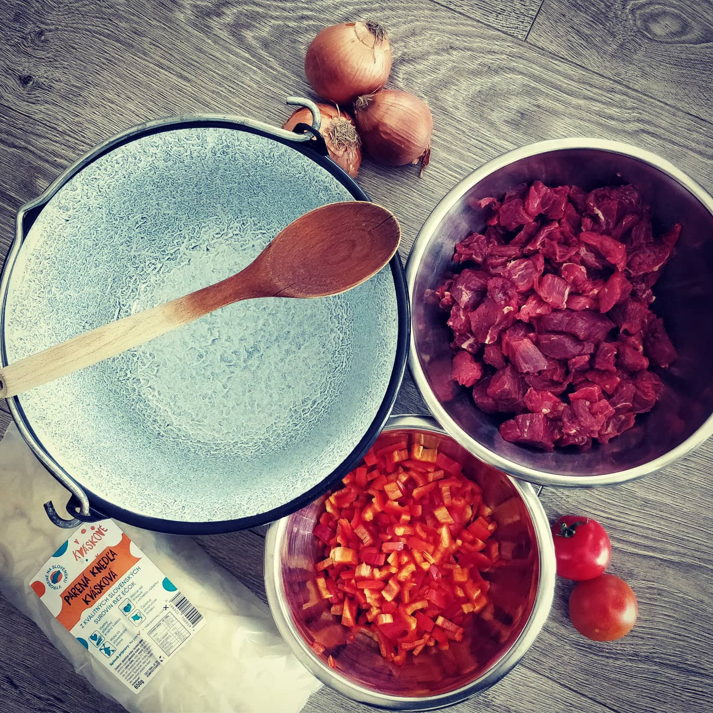

Kotlíkový guláš podľa @kvaskove_a_laskove — Normy Jedál
Čo dnes varíte vy? 🍲🥄🤤
Pochválte sa nám .
.
.
whats your deal today? 🍲🥄😉
.
.
#gulas #vkotliku #gulasknedlou #hustygulas #kvaskovaknedla #knedla #kotlikovygulas #gulasnaohni #kvaskove #dobrykvasok #sobotnevarenie #sobota #vikend #sourdough #goulash #cookingoutside #food #foodlover #foodfeed